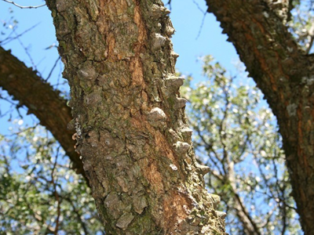
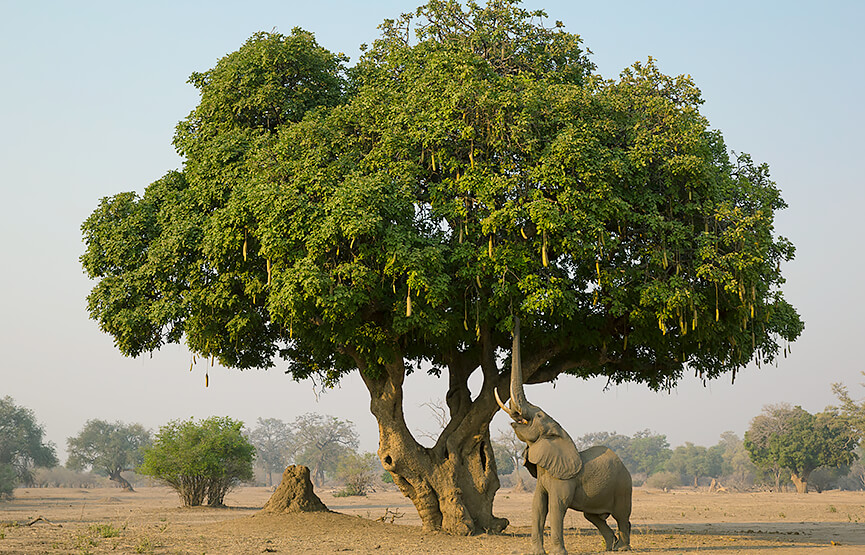
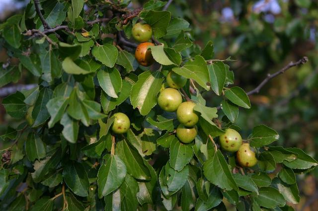
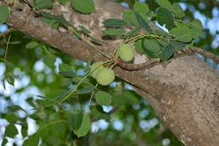
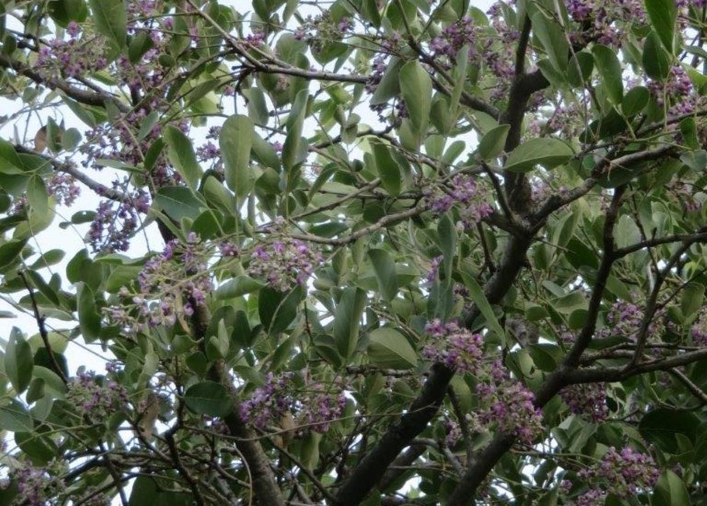
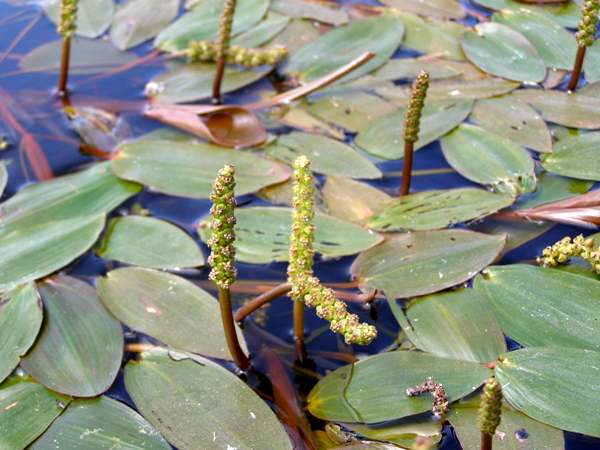

Botswana's flora is a testament to the country's rich biodiversity and unique ecosystems. The Okavango Delta, in particular, is a haven for a wide variety of plant species, including the iconic baobab tree, water lilies, and various grasses and shrubs. These plants play a crucial role in supporting the diverse wildlife of the region and contribute to the overall beauty and ecological balance of Botswana.
Wonders of Botswana

Baobab Tree
Discover the iconic baobab tree, a symbol of resilience and life in Botswana's landscapes, known for its unique shape and cultural significance.
Experience and discover more
Water Lilies
Experience the enchanting beauty of water lilies in the Okavango Delta, where their vibrant blooms create a stunning contrast against the tranquil waters.
Learn More about Water Lilies
Jackalberry Tree
Discover the Jackalberry tree, a vital component of Botswana's ecosystems, providing food and shelter for various wildlife species.
Learn More about the Jackalberry Tree
Knob Thorn Tree
Explore the Knob Thorn tree, a resilient species that thrives in Botswana's arid regions, known for its distinctive thorns and ecological importance.
Learn More about the Knob Thorn Tree
Sausage Tree
Discover the unique Sausage Tree, known for its large, sausage-shaped fruits and its role in supporting wildlife in Botswana's ecosystems.
Learn More about the Sausage Tree
Buffalo Thorn Tree
Explore the Buffalo Thorn tree, a hardy species that thrives in Botswana's landscapes, providing food and shelter for various wildlife species.
Learn More about the Buffalo Thorn Tree
Marula Tree
Discover the Marula tree, a significant species in Botswana's ecosystems, known for its sweet fruits that attract wildlife and its cultural importance.
Learn More about the Marula Tree
Mopane Tree
Explore the Mopane tree, a resilient species that thrives in Botswana's arid regions, known for its distinctive butterfly-shaped leaves and ecological importance.
Learn More about the Mopane Tree
Floating Pondweed
Discover the Floating Pondweed, an aquatic plant that thrives in the Okavango Delta, providing habitat and food for various aquatic species.
Learn More about the Floating Pondweed